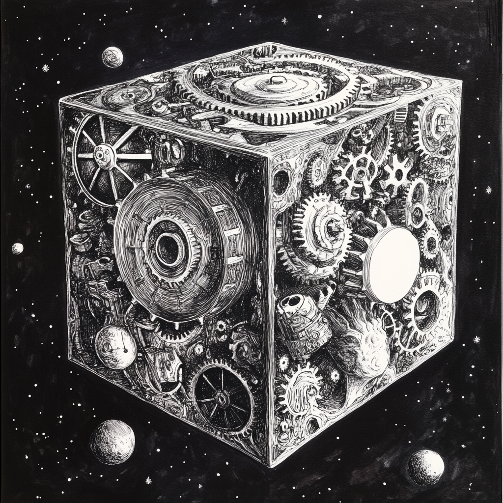

В ноябре 2015 года администратор проекта анонсировал и выпустил, пожалуй, одно из лучших (без сарказма) своих обновлений, в составе которого новое подземелье и новый комплект брони, и, конечно же, новый квест, прохождение которого открывает доступ ко всему этому добру.
Описание квеста
- Квест рассчитан на аватаров уровня 50+, однако взять его можно гораздо раньше.
- Для взятия квеста Вам необходимо посетить Рика Зубцевика, живущего на координатах 123; 62.
- Квест можно пройти в отряде.
- Основная награда за прохождение квеста:
- Гир-о-куб
- 170000 опыта
- Альтернативная награда:
- 8000 серебра
- Последующая возможность выкупить Гир-о-куб за неизвестное количество серебра
Прохождение квеста
Взятие квеста
Первым делом нам необходимо дойти до места жительства Рика Зубцевика. Быстрее и проще всего это будет сделать по дорогам. Идите по дороге прямо на север, пока не выйдете на дорогу северного тракта, а далее – на восток прямо в деревню к нашему товарищу. Крайне не рекомендую залезать на локации Северных предгорий и Пепельных гор.
- Рик Зубцевик: День добрый, уважаемый господин.
- Игрок: И тебе, добра, почтенный.
- Рик Зубцевик: Ежели есть у тебя немного времени, то может подсобишь мне с одним делом? Только сразу оговорюсь, задачка будет не из простых, даже, не побоюсь этого слова, из сложных. Из очень сложных, ежели уж совсем на прямоту. Но я оплату не поскуплюсь, серебра отсыплю по заслугам.
- Игрок: Продолжай.
- Рик Зубцевик: Значится так, тут неподалеку, у подножия Пепельных гор есть одна старая заброшенная пещера, когда-то очень давно, гномы начали было обживать её, да вот незадача, потревожили в глубине жутких тварей, которым гномчятина оказалась вполне по вкусу. После этого братья наша бежала оттуда только пятки сверкали, бросив все, что было принесено с собой. Среди всего прочего, во время бегства был потерян чертеж одного редкого приспособления. Уверен, что он и сейчас там где-то в сундуке припрятанный лежит. Местным то хозяевам до сундуков дела точно нет. И вот ежели ты сумеешь отыскать для меня тот самый чертеж (на нем должен быть агрегат круглой формы, как увидишь, поймешь о чем речь), то рад я буду безмерно и отблагодарю тебя от души. Но сразу скажу, то, от чего убегали мои собратья побросав свои пожитки… в общем дело было давно и с тех пор желающих рисковать головой и снова туда лезть было немного, а тех, кто рискнул, больше никто и не видал.
- Игрок: Ясно-понятно. Звучит зловеще, но какими только чудищами меня не пугали. Так что, так и быть, схожу наведаюсь в эту пещеру, а там видно будет что да как.
- Рик Зубцевик: Отлично отлично. Пещера эта, значит, находится к югу и немного на запад от нашей деревни. Буду ждать тебя с нетерпением. И лучше найди надежных напарников, иначе не поздоровится тебе с местными обитателями.
- Игрок: Хорошо, учту твои предостережения.
Путь до Мшистых пещер
Далее наш путь лежит в Мшистые пещеры, находящиеся на координатах 100; 37. Рекомендую, не залезая на локации Северных предгорий и Пепельных гор, добраться до координат 94; 46, а потом уже дойти до пещер. С этого момента есть большая вероятность встретить на пути Черных медведей, Горных грифонов, а также стаи Пепельных волков. Они и будут являться самой сложной частью прохождения квеста. Рекомендую идти на замедленной скорости боя, не жалеть в бою со стаями Пепельных волков зелья забытого времени, и, если есть возможность, включить “Полет” Ангела или Призрачное бессмертие Призрака. Можно воспользоваться помощью сокланов или наемников, идти в составе отряда, ну или молиться госпоже Фортуне в надежде, что эти дикие животные Вас обойдут стороной. Если персонаж достаточно сильный, беспокоится не о чем.
Мшистые пещеры
Карту данного подземелья вы можете найти здесь. Для начала Вам необходимо добраться до восточного рычага по дороге, обозначенного на карте голубым цветом (88 шагов), а затем до сундука, находящегося в центре подземелья, окрашенного тем же голубым цветом (в сумме необходимо пройти 153 шага в подземелье).
На Вашем пути будут попадаться 2-3 бота следующего состава:
- Подземные трупоеды 91 уровня;
- Ферритовые пожиратели 61 уровня:
- С каждой атакой восстанавливает около 400-800 единиц здоровья;
- Накладывает эффект Опустошения разума;
- Имеет некоторое количество стартового ОД на действие;
- Большое количество сопротивления (невозможность пробить ударной магией) и сопротивления временным эффектам (60%);
- 30% поглощения урона.
- Кислотные пожиратели 61 уровня:
- С каждой атакой восстанавливает около 400-800 единиц здоровья;
- Накладывает эффект Паралича;
- Имеет некоторое количество стартового ОД на действие;
- Наносит дополнительный урон в виде кислотного ожога (200-400 единиц);
- Большое количество сопротивления временным эффектам (60%);
- 30% поглощения урона.
- Арканитовые пожиратели 61 уровня:
- Маг стихий: читает заклинание “Каменные тиски”;
- Имеет некоторое количество стартового ОД на действие;
- Большое количество брони (невозможность пробить обычными и стрелковыми атаками) и сопротивления временным эффектам (60%);
- 30% поглощения урона.
Полную информацию о параметрах этих ботов Вы можете найти по этой ссылке. К каждому из этих ботов нужно найти свой подход. Ферритовые и Кислотные пожиратели отлично умирают от обычных и стрелковых атак, а Арканитовые – от магии крови, ударных заклинаний и алхимический зелий.
Получение награды
После того, как забираем чертеж самогонного аппарата с сундука, снова навещаем алкоголика из Деревня Окололеска. Состоится следующий диалог:
- Рик Зубцевик: Получилось отыскать нужный чертеж?
- Игрок: Самогонный аппарат?! Серьезно?! Да я все проклял, пока по тем пещерам пробирался. И ради чего?
- Рик Зубцевик: И что такого? Самогонный аппарат – это по твоему две свистульки и трубка сбоку? Да сделать настоящий агрегат, который не сивуху гнать будет, а добротный самогон – не каждому мастеру по зубам. А по этому чертежу я такой шедевр соберу. Попробуешь мой самогон, забудешь как маму звали.
- Игрок: Не думаю, что в ближайшее время мне захочется пробовать гномий самогон. Что на счет моего вознаграждения?
- Рик Зубцевик: Так это само собой, вот 8000 серебряных, достойная награда как ни крути, правда? Но вместо денег могу предложить и кое-что поинтереснее, есть у меня один древний артефакт, работы гремлинов, ты про таких наверняка и не слыхивал. С виду простая коробка, но если повернуть вот эту пару граней, да нажать вот сюда и сюда, то можно переместиться внутрь этого куба. Да-да, не надо на меня так смотреть. Гномы – большие мастера по всяким механизмам, но до гремлинов нам в этом деле далеко. Так вот, эту шкатулку, куб, коробку, как угодно называй, хоть горшком, только в печку не ставь. Эту шкатулку создал явный мастер своего дела, там внутри небольшое карманное измерение, со своими обитателями между прочим. Что-то похожее на лабиринт с ловушками и стражей, возможно хозяин прятал туда самые свои ценные ценности. Я и сам пробовал туда путешествовать, но не сильно в этом преуспел, староват уже махать секирой, а местная стража мух не ловит. Возможно тебе повезет больше. Итак, что выбираешь?
- Игрок: Древний артефакт – это, конечно, хорошо, но я предпочитаю чтобы в кармане позвякивало, стабильность, все дела, поэтому возьму серебро.
- Игрок: Заинтриговал ты меня больно с этой шкатулкой. Так и быть, давай её, надеюсь и правда что-то ценное там внутри найдется.
- При втором варианте:
- Рик Зубцевик: Уважаю твой выбор. И спасибо за работу. Ты, ежели найдешь какой интересный механизм или типа того, то приноси ко мне, я покумекаю, может пользу смогу извлечь, а с ней и выгоду и тебе и мне.
- Игрок: Хорошо, буду иметь ввиду. Удачи.
Заключение
Квест “Скользкое дело” предназначен для аватаров среднего уровня, незамысловатый в прохождении, а основной наградой является Гир-о-куб, который дает возможность нафармить вполне неплохой Гир-о-комплект, Гир-о-шестеренки, руны, предметы из комплектов Магистра и Воина Крови.